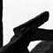
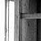

|
• SMS, h 11:43
• SMS, h 13:31
Dachau, h 14:00
Usciti dal campo di concentramento di Dachau.
Cielo nuvoloso con squarci di luce, un'atmosfera che induce al silenzio. Il vento piega gli alberi del viale, oramai adulti: presenza silenziosa, testimone dell'orrido umano.
Pensieri si rincorrono... odio, amore, guerre, orrore, tristezza... penso all'esperienza dell'uomo, al Kossovo, alla ricchezza, al *continuare*.
L'orrore attenuato dalla ricostruzione degli anni '60 è coperto da angoscia e tristezza. Un enorme, eterno e universale funerale collettivo. Abbiamo il silenzio dentro.
Davide:
«Con questa visita a Dachau la sosta a Monaco ha ora tutto un altro significato».
Partenza per Praga
On the road, h 15:30
SMS di DAMA: "seguiamo con passione i vs spostamenti teneteci informati DAMA"
On the road, h 16:00
Norimberga, un flash. Da qualche angolo recondito della mia memoria, immagini da film *storici*.
Collego alla velocità della luce un pensiero dietro l'altro, collegamenti non spiegabili. Penso ad una foto al museo di Dachau: la vita di un uomo portata al suicidio. La disperazione lancia verso fili elettrificati, senza speranza.
È insostenibile il pensiero di una vita catturata, torturata e infine spinta all'autodistruzione.
Flash: il potere nazifascista oramai di fronte alla propria sconfitta... Hitler si finisce con un colpo di pistola... Il grande nemico dell'umanità, l'estrema sintesi di un potere nefasto riassume in un gesto tutta la propria debolezza e la propria vigliaccheria.
È un conforto, forse piccolo ma fondamentale, il pensiero della forza e del coraggio dimostrata da milioni di uomini inermi e perseguitati... proprio i più deboli, le vittime, più forti e grandi dei propri carnefici.
La crudeltà una facile droga per sopportare [accettare, giustificare] i propri fantasmi. E, forse, la crudeltà subita un modo per abbattere nella reazione i propri incubi.
Sfrecciano abeti accanto al cuneo di cemento. Gli occhi si fanno pesanti e il viaggio incide pensieri nel tempo. Mi volto, le colline mangiano la strada e con lei i ns ricordi. Alle ns spalle lo scorrere del tempo è un tapis-rulant che nel suo movimento trasporta lo spirito dal sentire all'essere.
Stamane abbiamo camminato su teschi di pietra. Siamo stati sferzati da anime in tempesta. Abbiamo dormito su panche in legno, bagnato di sudore arido terriccio e sciacquati in luridi lavatoi. Oggi abbiamo respirato il dolore di migliaia di uomini e guardato alberi cresciuti tra anime in pena. Gli alberi, esili ramoscelli incapaci di un appoggio prima, feroci testimoni adulti e rigorosi ora.
Neanche il conforto dell'ombra o un tronco sui cui appoggiarsi...
|